Tree CareAll aspects of tree care considered
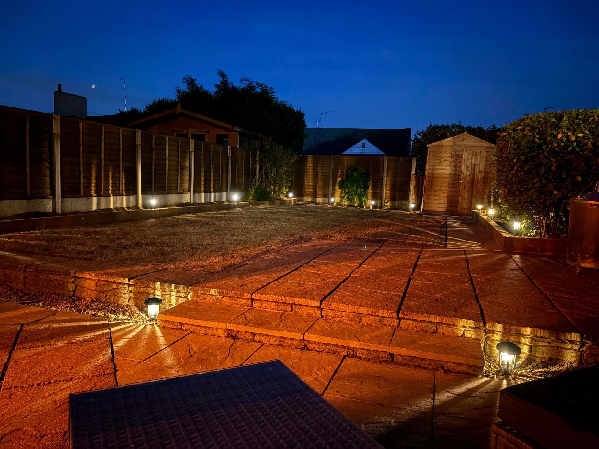
TREE CARE · LANDSCAPING · OUTDOOR WORK
Make the most of your outdoor space.
A family business with over 25 years' experience. From caring for trees to building patios and transforming gardens, AJC brings the work together.
Tree CareGarden LandscapingPatiosFencing
Garden LandscapingMakeovers and usable outdoor spaces
Patios & PavingPaths, seating areas and garden levels
Fencing & DeckingBoundaries and timber garden features
LANDSCAPING
More than a garden. Space to use.
AJC's supplied work shows patios, pathways, garden levels, fencing and outdoor areas brought together around the home. Whether you have a specific job or want to rethink the whole space, start with a free quote.
Tell us about your garden →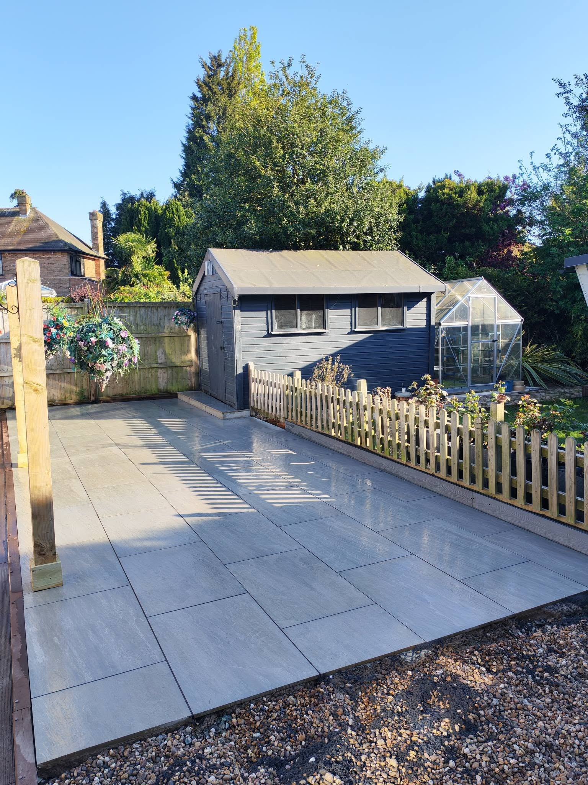
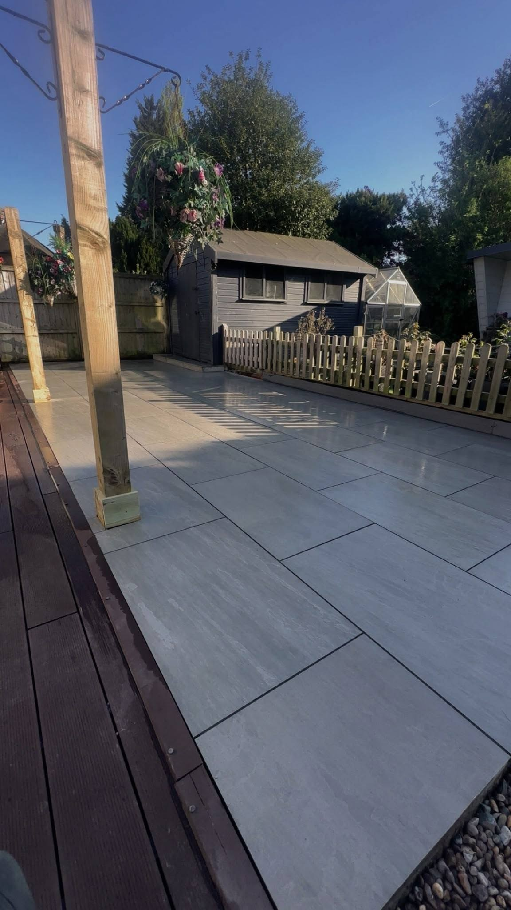
TREE CARE
Look after what makes your garden.
Trees change how a garden looks and feels. AJC covers all aspects of tree care, with the experience to discuss the work your outdoor space needs.
Ask about tree work →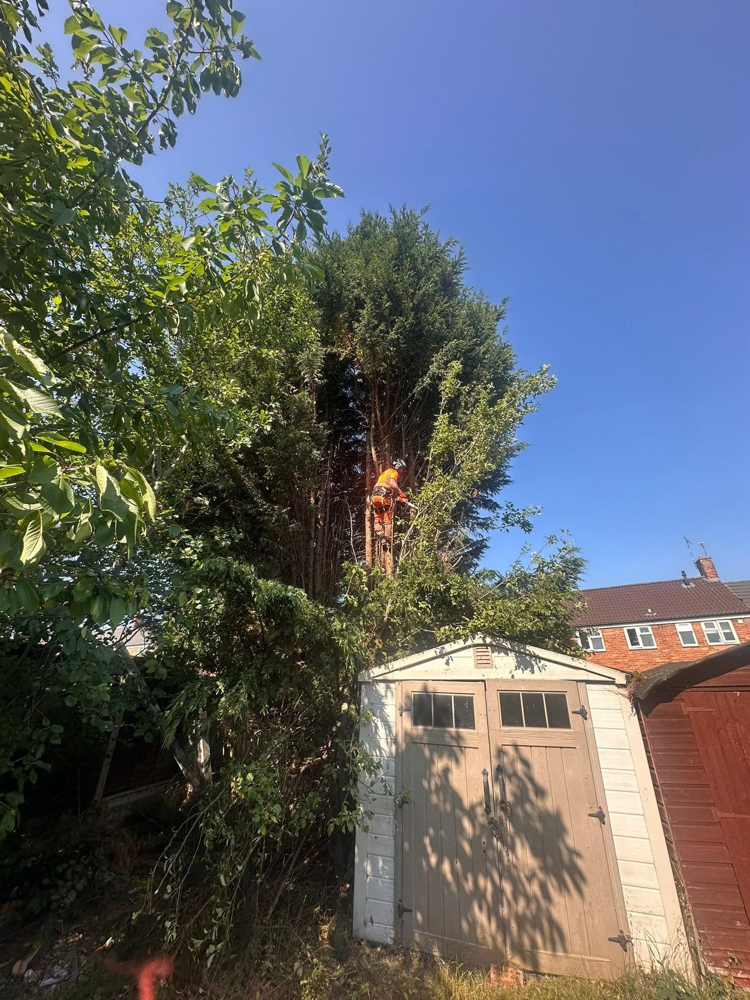
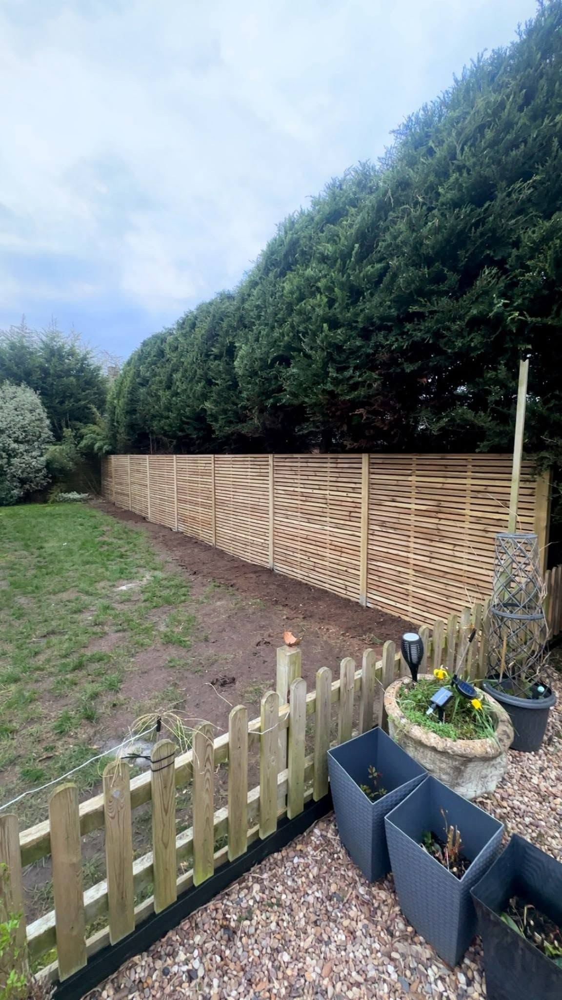
RECENT WORK
Gardens seen from every angle.
Project photographs supplied for AJC Trees and Landscapes.
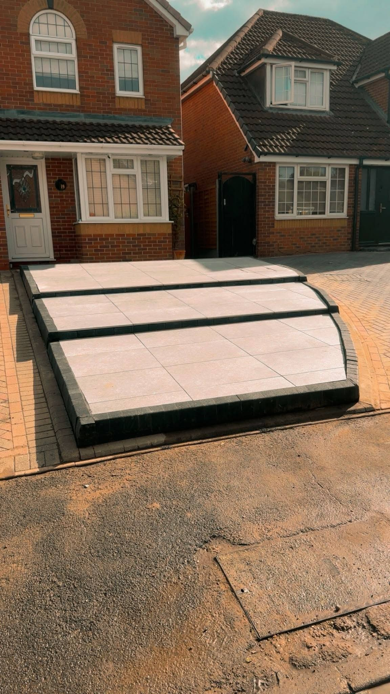
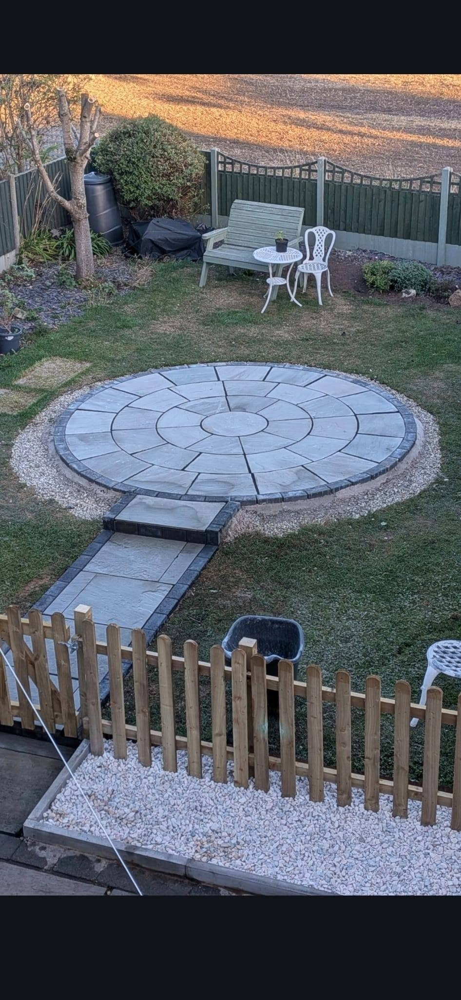
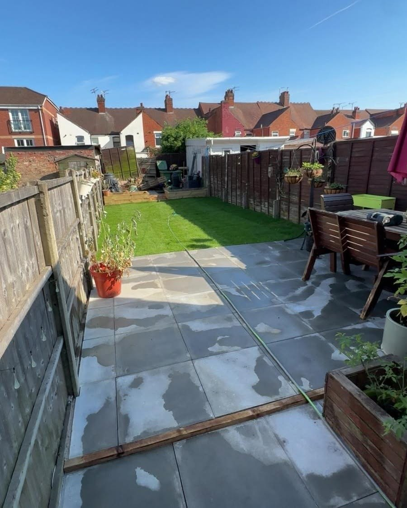
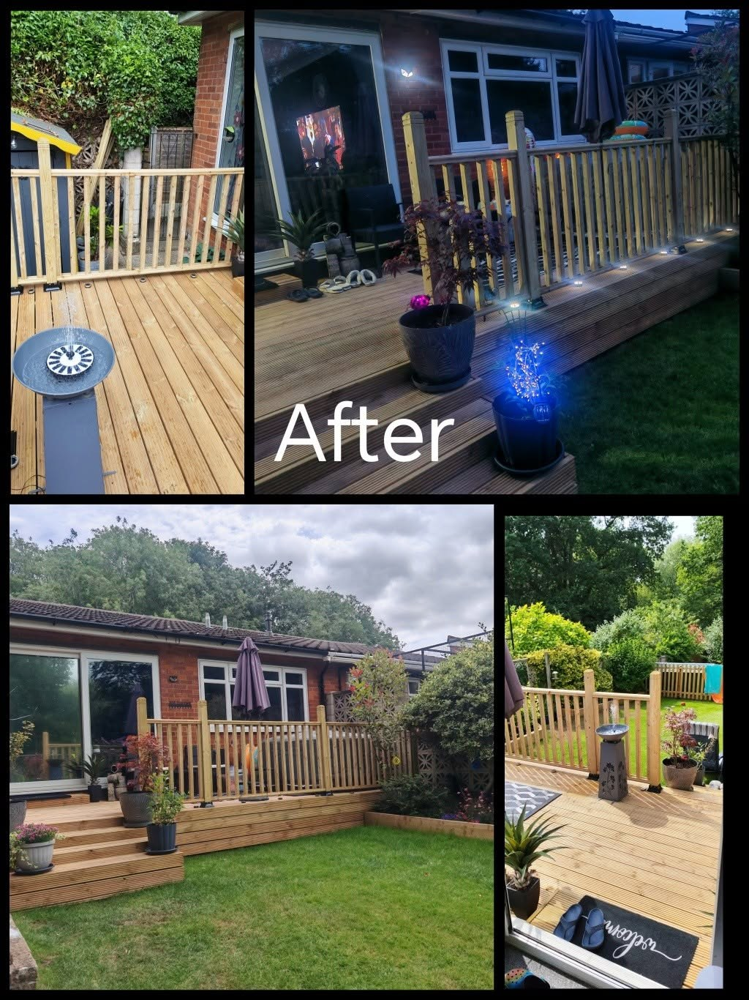
GARDEN TRANSFORMATIONS
See the possibilities in the space you have.
These supplied photographs show a garden before work and a later garden view. Layout, access and the right mix of hard and soft landscaping make the difference.
Talk through your plans →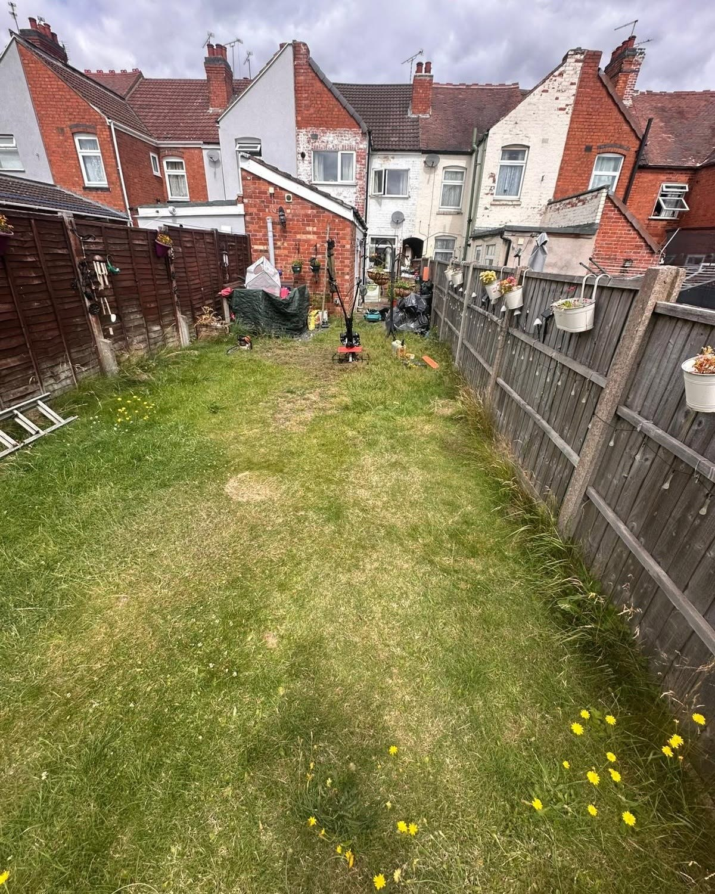
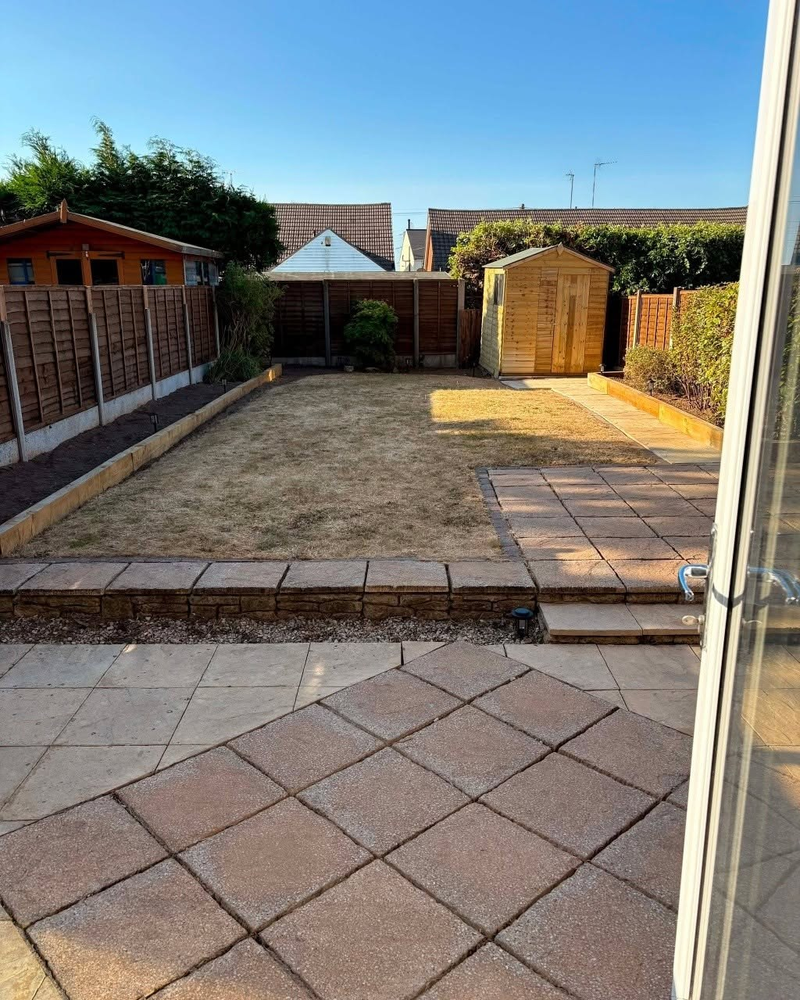
FAMILY-RUN OUTDOOR WORK
Experience you can put to work.
AJC Trees and Landscapes says it is a family business with over 25 years' experience. It covers tree care and landscaping, with other outdoor work considered.
01
Over 25 years' experience
Experienced help with tree and garden work.
02
From trees to patios
A range of practical services for your outdoor space.
03
Free quotes
Explain the job and arrange a quotation.
REQUEST A FREE QUOTE
Tell AJC about the job.
Complete the form and WhatsApp opens with your details ready to send. This is a quote request, not a confirmed booking.